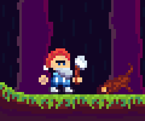

Dobrodošli u PikselŠpajzu
Mjesto gdje svaki piksel ima svoju priču
PikselŠpajza je platforma posvećena ljubiteljima pixel art-a, inspirirana starim igrama, retro estetikom i jednostavnošću digitalne umjetnosti.
Ovdje možete pregledavati unikatne pixel art radove, upoznati autore i pronaći inspiraciju u svijetu 8-bitnog dizajna koji nikada ne izlazi iz mode.
Naš cilj je spojiti nostalgiju prošlih vremena s modernim web tehnologijama i stvoriti prostor gdje kreativnost dolazi do izražaja.
